Na een hele hoop opdrachten gemaakt te hebben, is er nog één ding dat we moeten doen.
En dat is ook gelijk een groot ding, namelijk de zogenaamde labweken. Als ik heel eerlijk
ben, zie ik er een beetje tegenop, want dagelijks van 9 tot 5 aan een project zitten gaat
een hele ruk zijn. Maar misschien verandert dit wel! Op deze pagina ziet u de voortgang van
mijn labweken. Elke dag schrijf ik een klein stuk tekst over hoe het gegaan is. Wat heb ik
gedaan die dag? En wat vond ik ervan? Dat is wat u op deze pagina gaat zien.
Dinsdag 7 juni 2022
De eerste dag van de labweken. Hetgeen waar ik eerlijk gezegd erg lang tegenop zag.
Dit niet alleen doordat het lange dagen waren, maar ook doordat ik zelf de groepen
niet mocht maken. Mijn Engels is niet al te best, dus ik was erg bang of de communicatie
wel goed zou gaan. Achteraf bleek dit gelukkig niet eens nodig te zijn, want ik zat alleen
maar in de groep met studenten die Nederlands spreken, wat erg fijn was! Ook kregen wij te
horen dat wij aan de slag mochten met het hoofdstuk "AR/VR". Nadat wij als groep elkaar een
beetje hadden leren kennen, kregen wij de opdracht om een fysiek logo te maken. Wij waren
eigenlijk allemaal aan vakantie toe, dus wij besloten het simpel te houden. We hebben
namelijk allemaal een vliegtuigje gevouwen, en degene met de mooiste zou het uiteindelijke
logo worden. Zie hieronder het logo:
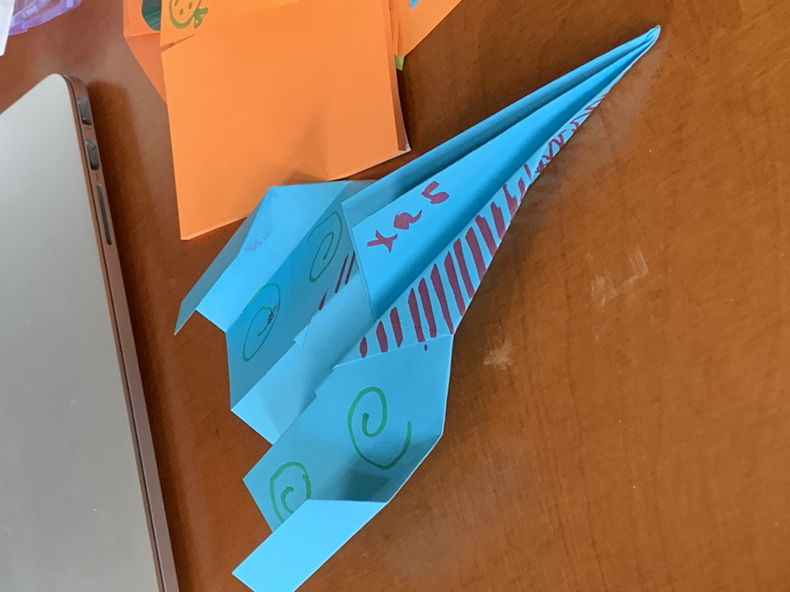
Hierna zijn wij gelijk begonnen aan het bespreken wat wij precies wilden maken. We hoefden
gelukkig niet al te lang na te denken of we voor VR of AR zullen gaan. Ons allemaal leek VR
erg vet en aangezien we een pc met een oculus VR-bril konden lenen was de keuze dus snel
gemaakt. We sloten de VR-set aan en we hebben allemaal even gekeken hoe het was. Hierna
was het tijd om echt te gaan beginnen. Nadat een groepsgenootje en ik batterijen en een
soort Wi-Fi USB gehaald hadden, zijn we gaan kijken wat we precies wilden maken. We besloten
voor een VR-wereld te gaan die iets te maken had met onze groep, genaamd "Op vakantie".
Nouja, u raadt het al: We deden iets met vakantie. We besloten de weg van school naar onze
ideale vakantieplek te creëren in het programma "Unity". Eigenlijk hebben wij deze dag voor
de rest niet zo veel gedaan. Het was vooral bespreken hoe of wat, en dat heeft wel degelijk
geholpen!
Woensdag 8 juni 2022
Over deze dag heb ik eigenlijk niet heel veel te zeggen. Zoals in het stuk hierboven verteld,
zijn we ervoor gegaan om de game in het programma "Unity" te maken. Wij wisten allemaal
nog niet hoe dit programma werkte, dus we besloten deze dag eruit te trekken om even goed te
ontdekken hoe het programma nou in elkaar zat. Ik besloot rond te kijken en kwam op een cursus
op de site "Udemy" uit. Ik had deze website al gebruikt voor AW2 in de eerste, dus ik wist dat
dit een goede website was om ook Unity op te leren. Ik besloot hierop de cursus te volgen en ik
wist wel iets meer. Vervolgens ben ik ook nog wat tutorials op YouTube gaan kijken en ik werd er
beter en beter in! Ik wist zelfs al een beginnetje aan een eigen wereld te maken. Ik had er (ook
na de tutorials) best wat moeite mee, maar gelukkig was mijn groepje er altijd om me te helpen.
Zie hieronder mijn beginnetje van mijn eigen wereld:
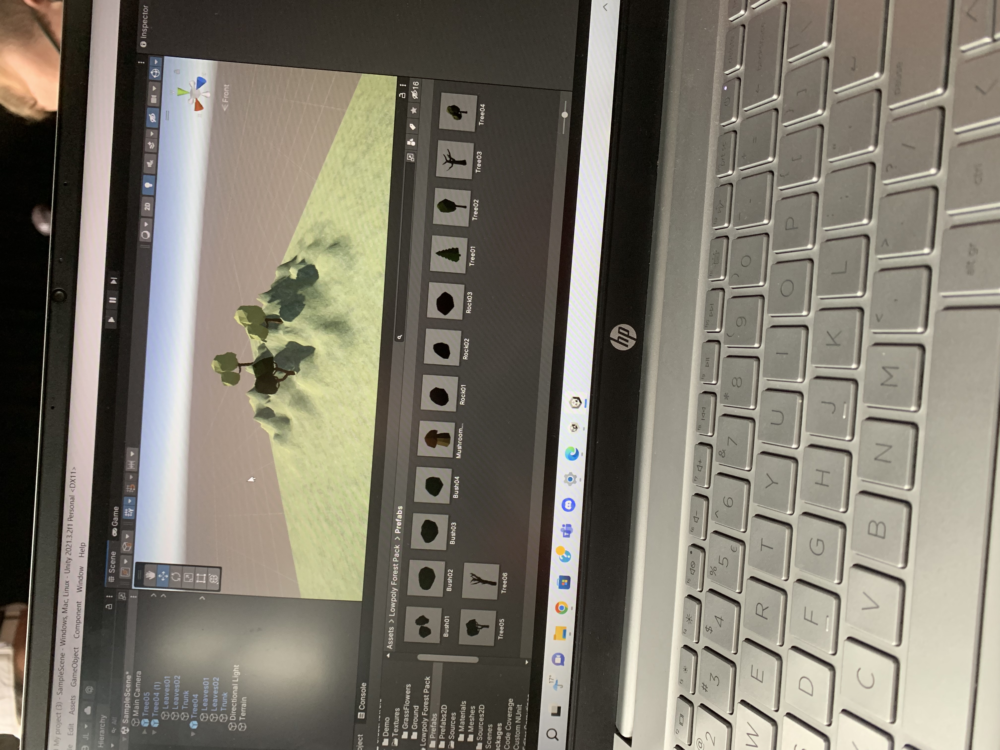
Voor de rest heb ik eigenlijk een beetje gespeeld met Unity. Ik leerde over de assets die
je kon downloaden en kon importeren in het programma. Ook kwam ik erachter hoe ik kon
lopen in deze wereld. ik vond het erg interessant en ook leuk om te doen!
Donderdag 9 juni 2022
Deze dag begon met de taakverdeling. Drie uit mijn team zullen de wereld gaan maken en
twee zullen er aan de gang gaan met de interacties. Ik kreeg de eer om aan dat tweede te
werken. Het begon overigens best een beetje vervelend. Ik zou met iemand uit mijn groep
samen gaan werken in eenzelfde bestand, maar dit wilde niet werken doordat ik nog niet de
goede versie van Unity had. Dit betekende dat ik dit mocht installeren. Het probleem was
alleen dat de Wi-Fi niet al te best was doordat iedereen erop zat, wat resulteerde in uren
moeten wachten. In de tussentijd besloot ik maar eens wat nuttigers te doen. Zoals eerder
benoemd, wilden wij de weg van school naar onze ideale vakantieplek doen. Daarvoor was een
360 graden foto van in de school nodig. Ik besloot deze dus te maken. Ik liep 20 minuten
naar school toe en begon aan het maken van deze foto. Het kostte me erg veel tijd, frustratie
en moeite, maar uiteindelijk ben ik toch aan een mooie foto gekomen. Deze foto staat hieronder.
Helaas lukt het hier niet in 360 graden, maar als een soort panorama:
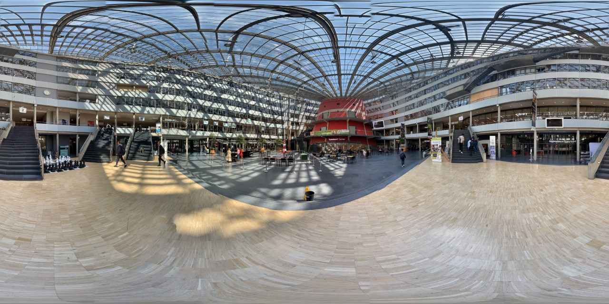
Nadat ik weer 20 minuten teruggelopen had, was het tijd voor de eerste guest lecture van
de labweken. Doordat mijn Engels niet al te best is, kostte het me best wat moeite om het
te begrijpen. Uiteindelijk vond ik het toch best interessant. De man die vertelde had het
over zijn onderzoek in Afrika. Daar nam hij met een camera olifanten waar. Best interessant,
aangezien ik best geïnteresseerd ben in dieren als de olifant.
Na de guest lecture besloot ik aan de slag te gaan met de foto's die ik eerder gemaakt had.
Hoe zou ik deze in Unity zetten? En hoe zorg ik ervoor dat ik met een VR-bril rond kan
kijken? Dit leek allemaal simpel: Eventjes een tutorial op YouTube kijken en klaar! Niets
was minder waar. Het wilde me namelijk maar niet lukken. Ik deed alles precies hetzelfde, maar
de foto wilde maar niet draaien. Ik besloot de volgende dag verder te kijken.
Vrijdag 10 juni 2022
De avond voor deze dag ben ik YouTube nog even door gaan kijken naar oplossingen. Ik
kwam op een filmpje uit en besloot deze een dag later uit te proberen. Ik probeerde het
en achteraf bleek het zo te zijn, dat ik nog 1 optie (de "lightning" optie) niet gebruikt had.
Ik gebruikte hem en opeens was daar ein-de-lijk het moment waarop het me gelukt was.
Ik kon rondkijken in de gamestand!
Ik was dus eindelijk klaar met dit helse karwei, dus ik besloot verder te kijken. Ik voegde een
vloer toe om zo daadwerkelijk te kunnen lopen, voegde de bijbehorende asset toe en ik
kwam op het volgende uit:
Hierna was het tijd voor weer een guest lecture. Dit keer waren het twee oud-professoren
van Chris die wat dingen per onderwerp kwamen vertellen. Dit zullen wij dan eventueel als
inspiratie kunnen gebruiken. Ze praatten vrij snel, dus ik had erg veel moeite met het
begrijpen ervan. Ik zag wel iets van een robot die kon poepen, wat vrij apart was. Voor
de rest kan ik me er niet super veel meer van herinneren.
Na deze guest lecture ben ik verder gaan kijken naar de VR-school. Ik keek even
goed en zag dat de vloer het nou niet echt mooier maakte. het gaf een heel apart effect
doordat ik de foto genomen had toen ik rechtop stond. Het voelde als een soort zwevende
vloer waar je op stond en erg mooi was dit niet. Ik besloot het met de groep te bespreken
en eigenlijk kwamen we gelijk tot de conclusie dat ik óf opnieuw deze foto moest maken, maar
dan liggend, wat zwaar ongemakkelijk zou worden, óf ik zou ervoor kiezen om de vloer weg te
halen. Ik besloot voor dat tweede te gaan. Het zag er gelijk meer uit alsof je echt door de
school heen wandelde. Helaas niet letterlijk, je zag niet dat je echt door de school heen
liep, maar het kon gebruikt worden als skybox en dat was de bedoeling!
Doordat het een hele lange dag was, zonder pauze (buiten die guest lecture) besloot ik
voor de rest van de dag even rond te kijken bij wat mijn vrienden gemaakt hadden. Ik was erg
verrast door sommige ideeën en vond het erg leuk om te zien wat zij hadden! Bij sommige dingen
Dacht ik ook: "Hey, dat is misschien ook leuk voor ons idee!" Een voorbeeld is een VR-game van
een goede vriend van mij. Zijn groepje maakte gebruik van planeten om dit als een soort portals
te gebruiken naar een level. Ik dacht toen na en met mijn groep besprak ik of dit misschien ook
een idee voor ons zou kunnen zijn (dan heb ik het natuurlijk over de portals). We waren er nog
niet helemaal uit, dus besloten dit tot de volgende week te verschuiven.
Aan het begin van deze week keek ik erg op tegen de labweken, vooral door mijn Engels wat niet
erg goed is. Het werkte dan ook goed mee dat ik bij alleen maar Nederlands sprekende studenten
in de groep zat. Het viel me dus ook behoorlijk mee. Het was een erg gezellige eerste week, al
vond ik die 9 tot 5 wel een hele ruk..
Maandag 13 juni 2022
Deze dag begonnen we met het bedenken van ons "mantra". Een soort zin die iets te maken
heeft waar we mee bezig zijn. Na een hoop zoeken kwamen we niet echt op iets uit. We dachten
na over hoe we deze wilden hebben. Wilden we de serieuze kant op? Of toch een andere? Eigenlijk
was het gedurende de hele tijd al een hoop humor in onze groep, dus de keuze is niet zo moeilijk
geweest. We besloten de humoristische kant op te gaan door een stuk tekst uit een nummer te
gebruiken als een soort quote. Ikzelf kwam met de fantastische optie om "Het is zomer in Nederland"
van het nummer van de almachtige rapper Sjors. Dit had echter iets meer te maken met de zomer dan
met vakantie, dus besloten voor de quote "Ff op vakantie ouwe" te gaan van lil' Kleine. Dit was humor-
istisch en paste ook bij wat wij aan het maken waren. Gelukkig hadden wij een fantastische tekenaar
in onze groep, die het getekend had. Met wat extra tekeningetjes van iemand anders uit mijn groep
kwamen we op het volgende uit:
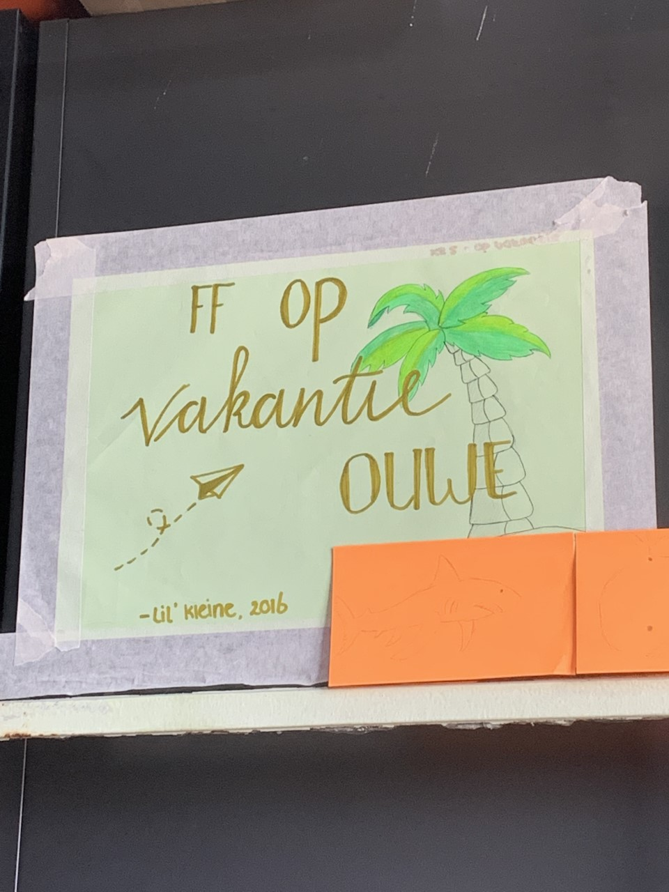
Hierna besloten we wederom te bespreken wat we precies met het teleporteren zullen
doen. Ik begon natuurlijk over de portals, wat er erg vet uit zag. Ik hoopte dan hetzelfde voor
elkaar te krijgen als in deze video. Dit besprak ik wederom met mijn groepje en het was een
lastige keuze, want eigenlijk had portals helemaal niet zoveel te maken met wat wij precies wilden
maken. Zij wilden liever aan de gang gaan met echte teleporters. Dit snap ik helemaal, want het is
ten eerste simpeler en ten tweede past het net iets meer bij wat we wilden maken. Het was dus de
bedoeling om vanaf de school te teleporteren naar het bos, een bewoond eiland of een onbewoond
eiland. Door drie teleporteerpunten wilden wij dit bewerkstelligen. Ik besloot alvast verder te
kijken naar hoe dit teleporteren in z'n werk ging. Dit probeerde ik met deze video. Echter, wilde dit
me niet echt lukken doordat het verwijzen naar de verschillende punten me erg veel moeite kostte.
Ik kon staan waar ik wilde, maar het teleporteren wilde me maar niet lukken (Zie video hieronder).
Gelukkig was daar degene met wie ik samenwerkte binnen de interactie. Haar was het op één of andere
manier wel gelukt, dus dat was erg mooi!
Nadat ik hiermee klaar was, was het tijd voor guest lecture nummer drie. Dit keer van een
docent van ons genaamd Daniël (volgens mij?). Hij vertelde over hoe hij hierin gerold is. Hij
begon in het circus en eindigde met het werken met de Arduino. Best interessant om te horen, want
hij vertelde ons dat hij ook ooit op ons punt zat en wij hetzelfde kunnen bereiken als hij. Het
was best motiverend! De vorige sprekers spraken echt vanaf het punt waar ze nu zijn. De professoren
praatten bijvoorbeeld over dingen die in het verleden gebeurd zijn, jaren terug. Daniël daarentegen
is vrij jong en weet dus precies in welk schuitje wij ons nu bevinden. Ik vond dit de meest interessante
guest lecture. Dat had er misschien ook mee te maken dat het niet een zit van een uur was, het was nu
makkelijker te volgen.
Na deze lecture begon het voor mij een stuk minder leuk te worden. Zoals u overduidelijk gelezen
heeft, ben ik lang bezig geweest met het maken van de school. Ik heb de 360 graden foto gemaakt en
mijn volle energie gestoken in het werkend krijgen hiervan. Doordat het teleporteren op dat punt erg
lastig was vanaf mijn VR-school (In VR werden er andere dingen gebruikt dan in de 3D wereld waar ik
mee bezig was), besloten wij dit eruit te laten. Dit was een heel vervelend moment voor mij, omdat het
voelde alsof al mijn werk in één keer weggegooid was. Nouja, dat was het eigenlijk ook. Maar het was
niet anders. Ik moest door en besloot de groep te ondersteunen waar nodig. Doordat ik toch een hoop
heb kunnen leren in de afgelopen dagen (het was best wat werk om zo iets simpels werkend te krijgen),
denk ik dat ik voor hen erg nuttig geweest ben. Ook voor mezelf heb ik in die "nutteloze" dagen dingen
kunnen leren als het maken van de 360 graden foto, de invisible walls en het teleporten (ik heb
met degene die het wel begreep bekeken hoe het zat). Ik denk dus dat ik, ondanks dat deze school helaas
niet in het eindresultaat te zien zou zijn erg veel dingen geleerd. Dit bleek ook uit de volgende dagen,
waarop ik een hoop dingen op de achtergrond heb kunnen doen om de wereld werkende te krijgen!
Dinsdag 14 juni 2022
Vandaag was dan eindelijk de dag aangebroken dat de gemaakte werelden van mijn drie groeps-
genootjes samengevoegd werden tot één wereld. Dit betekende dat er voor ons eigenlijk niet zo veel te
doen was, want alles moest gebeuren op de pc die wij in ons bezit hadden. Doordat deze werelden erg
groot waren, kostte het best wat tijd om dit voor elkaar te krijgen. Bij het toevoegen van de eerste
wereld, hadden we eigenlijk gelijk al het probleem dat het lopen in VR nog niet echt wist te werken. Het
was namelijk het geval dat de camera op een bepaalde hoogte zat, en deze bleef op deze hoogte. Dit
betekende dus dat je dwars door dingen als bergen heen liep en dat is natuurlijk niet de bedoeling. Ook
liep je vrij sloom waardoor het (vanzelfsprekend) lang duurde om ergens te komen. Door middel van
dit filmpje hebben wij dit kunnen fixen.
Ik merkte dat alles in VR zo anders was! Ik was natuurlijk gewend om in een 3D map te werken in Unity,
maar in VR zaten zo veel andere dingen... In 3D hebben wij bijvoorbeeld een asset genaamd "Modular First
person controller" gebruikt. Hierin zaten een demo en de officiele codes etc. verwerkt. Door de demo in de
map te slepen en vervolgens alle attributen van deze demo (oa. een trap) te verwijderen, kon je lopen!
In VR zat dat echter anders, hier gebruikte je niet deze asset, maar dingen als XR Orgin en XR Rig gebruikt.
Natuurlijk zaten de handjes die gekoppeld waren aan de bijbehorende oculus bril hieraan vastgekoppeld.
Het werkte dus heel anders dan in de 3D wereld! Het was voor mijn gevoel ook een stuk lastiger, maar met
de hulp van deze tutorial zijn wij een heel eind gekomen! Ik was dan ook erg blij dat degene die samen
met mij de interactie deed op deze video gekomen was. Ik checkte deze even uit, waardoor ik ook gelijk
wat meer wist over hoe de VR precies werkte. Ik kon diegene dus helpen waar nodig.
Toen ik erachter kwam dat het eigenlijk allemaal wel goed ging met de VR, ben ik gaan kijken naar wat
er verder nog moest gebeuren in ons eindproduct. Ik dacht na over de duidelijkheid: Hoe gaan we de
gebruiker duidelijk maken wat hij/zij moet doen? Dat kan eigenlijk maar op één manier, en dat is tekst.
Maar hoe voeg je dit toe in Unity? Eigenlijk wist de hele groep dat niet, dus ik ben gaan kijken. Achteraf
was dit helemaal niet zo lastig, want het stond gewoon bij de 3D objects. Er was wel een beetje onduidelijk-
heid welke ik moest gebruiken, want het stond namelijk ook onder het tabblad "window". Dit was echter
vooral om tekst aan te passen en aan te maken, dus bijvoorbeeld het importeren van een font. Ik keek
dus gewoon via de 3D objects.
Nadat ik dit gedaan had, was het tijd voor de allerlaatste guest lecture. Dit keer van iemand die onder
meer voor Vodafone gewerkt had. Als ik heel eerlijk ben, begreep ik er erg weinig van doordat hij nogal
een accent had (ik denk Australisch ofzo), wat het iets lastiger maakte om het goed te begrijpen. Ik vond
dit dus niet de leukste guest lecture van de labweken, maar dat kwam vooral doordat ik niet super goed
Engels begrijp. Laat staan Engels met een heel erg accent. Uiteindelijk vond ik het wel erg leuk dat de
spreker een soort fiches had verstopt in de zaal die wij konden zoeken. Bij het vinden van zo'n fiche
kon je deze bij hem inruilen voor een goodiebag van Vodafone. In deze goodiebag zat er onder meer een
Rubiks cube van Vodafode, wat erg leuk was. Helaas wist ik er geen te vinden, maar erg leuk om er ook
iets interactiefs in te verwerken. Dit had bij de vorige guest lectures ook wel gemogen.
Na deze guest lecture ging ik verder aan het toevoegen van de tekst in een testwereld die ik snel aan-
gemaakt had. In principe was het toevoegen van tekst dus niet zo moeilijk, zou je denken. Maar Julian zou
Julian niet zijn als hij geen domme fout zou maken! Ik voegde de tekst toe en deze kwam maar niet
tevoorschijn. Dit was erg vervelend en zocht maar rond op Google, met het resultaat dat ik het niet kon
vinden. Tien minuten later kwam ik dan eindelijk achter het probleem. Er stond rechtsonder een mega
pop-up waarin stond dat ik de zogenaamde "TMP Essentials" moest importeren om dit te fixen:

Nadat ik even een goede pauze gehouden had, besloot ik verder te gaan met het toevoegen van de tekst.
Ik had dus even een klein wereldje aangemaakt om te kijken hoe het eruit zou zien als ik deze tekst toe
zou voegen. Eerst besloot ik even verder te kijken naar de verschillende opties. Dit waren er gelukkig niet
belachelijk veel ofzo, dus ik was hier zo doorheen. Het was bijvoorbeeld wel handig om te weten dat je tekst
kunt uitlijnen en er een rand omheen kan doen. Ik wist dat we zullen teleporten door ergens tegenaan te
lopen (het zou dus een soort portal worden, maar geen portal. Snapt u hem nog?) dus ik besloot dit een
beetje na te maken. Ik gebruikte blokjes als de portals en zette de tekst erboven. Ik hoopte ervoor te
zorgen dat de tekst altijd zichtbaar zou blijven, hoe ver je ook loopt. Wel met de uitzondering dat je er
echt vlak voor staat. Daarom vond ik het een goed idee om de tekst vrij dicht op het blokje te zetten.
Uiteindelijk was de tekst dus niet zo lastig om toe te voegen. Toch waren we inmiddels al op het einde van
de dag en kwam ik op het volgende resultaat uit. De tekst had ik dus goed onder de knie, doordat ik door de
verschillende opties heen gegaan was gedurende dit kleine proces. Ik had dus genoeg kennis voor wanneer
het nodig was bij het eindproduct en kwam hierop uit:
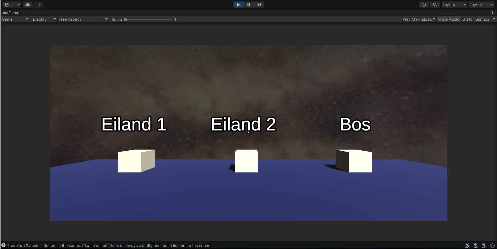
Woensdag 15 juni 2022
Deze dag begon met het bedenken van de naam van onze game en het maken van de poster. Het leek
mij leuk om gebruik te maken van een alliteratie, want dat klinkt leuk. De groep was het hier eigenlijk gelijk
mee eens, dus we besloten voor de naam "VR Vacation Vibe" te gaan. Ik denk dat het wel voor zich spreekt
waarom we het zo genoemd hebben. Verder moesten wij ook een soort beschrijving toevoegen, waarin wij
iets rijmends verwerkt wilden hebben. Het moest een duidelijk verband hebben met onze game, maar ook
leuk klinken. Uiteindelijk zijn wij gegaan voor:
Ready for vacation but no time to go? Experience it from home and go with the flow.
Deze beschrijving legt uit wat onze game is, het klinkt leuk en het klinkt ook grappig! We besloten hier dus
voor te gaan! We hebben het template welke wij van tevoren kregen zo aangepast, dat het je een vakantie-
gevoel geeft. Dit probeerden wij te bewerkstelligen met veel kleuren. Zie hieronder het resultaat:
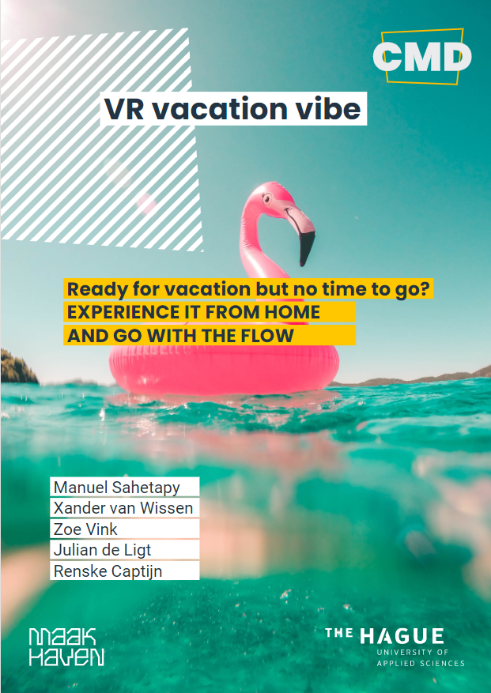
Op deze dag waren de gemaakte werelden nog steeds niet samengevoegd. Dit kwam vooral doordat één
wereld maar errors bleef hebben. Twee van de werelden werkten wel, en hier konden wij met de VR in lopen,
wat erg vet was. Het nadeel is dat er in het bos vlinders verwerkt zaten, welke voor een hoop haperingetjes
zorgden. Dit negeerden we maar een beetje, want de vlinders gaven juist een mooi effect! Maar goed, ik was
bij de wereld die maar errors bleef hebben. Deze was van een groepsgenootje van me en hij had zijn bloed,
zweet en tranen hierin gestoken. Het zag er daarbij ook erg mooi uit, dus het was erg zonde dat deze het niet
wilde doen. Eigenlijk zullen diegene en ik deze dag naar de Solow in Den Haag gaan, maar dit sloegen we
even over om te proberen die wereld te fixen. Bij het versturen van deze wereld was er niets aan de hand,
maar toen deze op de "hoofd pc" geïmporteerd werd, werden een hoop objecten paars: Het programma
herkende deze objecten dus schijnbaar niet. We hadden alles geprobeerd, van de asetts opnieuw importeren
tot het opnieuw en omgekeerd (eerst deze wereld en daarna de andere twee) importeren, maar het wilde
helaas niet werken. We hebben zelfs William om hulp gevraagd, maar helaas kon ook hij ons niet helpen.
Na een tijdje zoeken kwamen wij dus niet met een oplossing. Mijn groepsgenootje besloot hier even verder
naar te kijken, en op een gegeven moment waren er een hele hoop errors weg! Er bleef echter één error over
en dit had iets met het water te maken (zie foto hieronder):
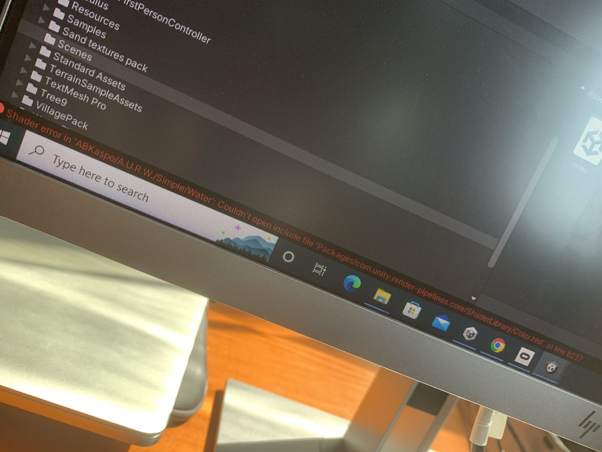
Nadat we beiden een hoop op hadden gezocht, in de code wat dingetjes aan hadden gepast en van alles
opnieuw gedownload hadden, wist het nog steeds niet te werken. We besloten dit voor vandaag even
te laten. Mijn groepsgenootje besloot thuis verder te kijken, in de hoop dat het de volgende dag wél zou
werken. Wij parkeerden dit dus even en we besloten verder te gaan met andere dingen.
Na extreem bezweet achter de pc gezeten te hebben (het was buiten de stress ook bloedheet), ben
ik wederom even rond gaan lopen om te kijken wat mijn vrienden hadden. Zelf had ik niet echt iets te
doen, doordat mijn groepsgenootje nog bezig was met het samenvoegen. Daarbij duurde dit ook erg lang
om te laden. Ik was wederom erg verrast bij wat de anderen hadden! Het was erg leuk om te zien hoe alles
in die paar dagen sinds de laatste keer zo veranderd en verbeterd was!
Maarrrr ik zat natuurlijk niet bij de Maakhaven om niets te doen, ik moest door! Samen met mijn groepje
heb ik besproken wat wij nog meer in de werelden wilden doen om het leuker te maken. Ik bedoel...
allemaal leuk dat je rond kan kijken, maar iets vast kunnen pakken of gooien is natuurlijk veel leuker,
vooral voor degenen die nog nooit eerder VR gebruikt hebben. We besloten even te kijken wat dit dus
zou kunnen zijn. Op beide stranden werden er volleybalnetten neergezet om dit te bewerkstelligen. Hier
hebben wij wat ballen neergelegd om op te kunnen pakken en mee te gooien. Dit kon via een script die je
toe kon voegen. Zie hier de video die we hiervoor hebben gebruikt. Ik was erg blij dat ik redelijk ben
in coderen, want ik wist goed waar hij het over had. Bij vragen of iets dergelijks wist ik vaak dus wel hoe
het zat. Het is niet dat ik C# (de codetaal welke we gebruikten) goed begrijp, maar ik kon er wel iets uithalen.
Ik merkte al gauw genoeg dat het coderen in Unity verder gaat dan alleen het coderen. Je moet bijvoor-
beeld na het coderen, dit script toevoegen aan je scene om vervolgens bepaalde dingen te koppelen
aan de variabelen in de code. Ik heb het dan bijvoorbeeld over de Interaction Manager. Deze moest je
in Unity zelf nog koppelen. Aan de ene kant vind ik dit erg fijn, maar ik was minder goed in dit koppelen.
Ik verwijs terug naar mijn teleporteerverhaaltje. De code ging goed, maar het koppelen ging gewoon
dramatisch. In ieder geval lukte het ons wel met de hulp van degene die eigenlijk het interactieve een
beetje leidde. We begonnen dus met testen en dit ging goed! Zie hieronder hoe dit er ongeveer uit zag
(Erg duidelijk is het niet, maar ik kon hier helaas geen betere foto's van vinden).
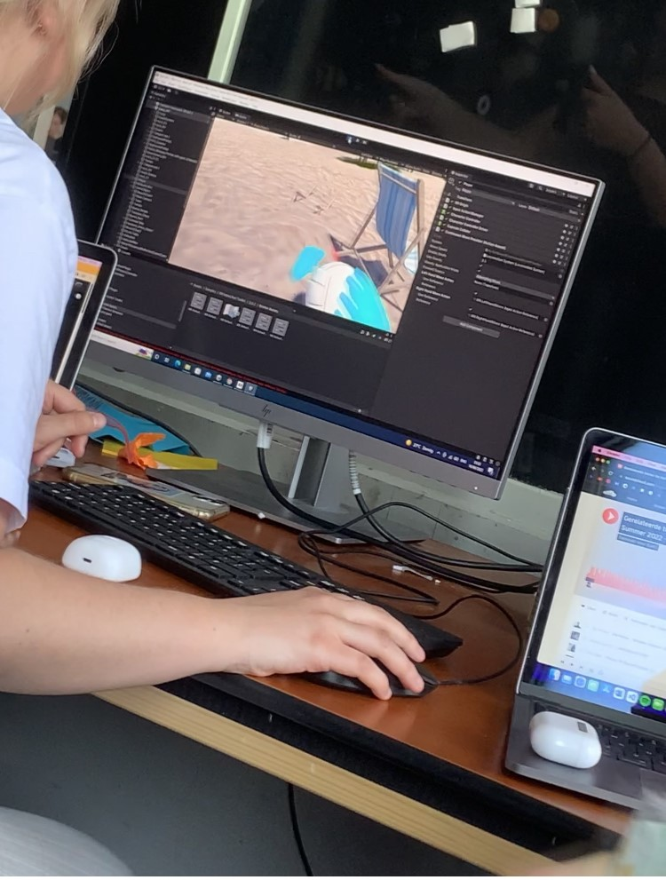 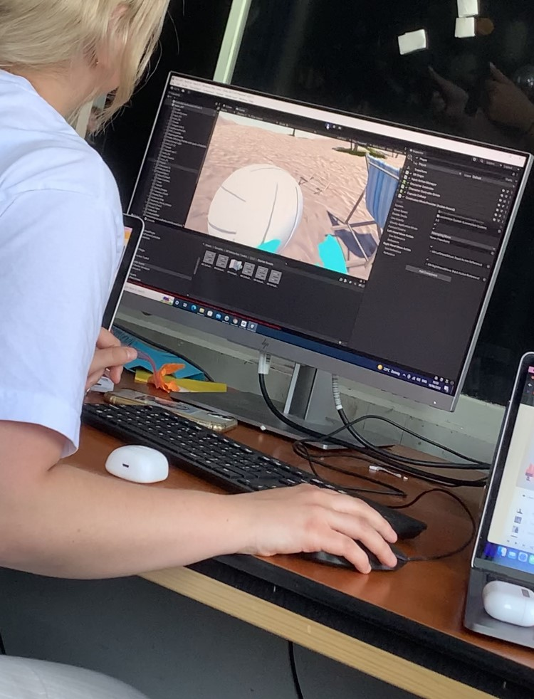
Later hebben we ook schatkisten en stenen toegevoegd aan de werelden (schatkisten op het eiland
en grote stenen in het bos) waar muziek uit komt, zo blijft het niet bij alleen zien. De ervaring moet
over het algemeen gewoon goed zijn. Hier hebben wij dus ook goed rekening mee gehouden. Alle
zintuigen moeten, mits mogelijk, geprikkeld worden. Het moest niet een simpel VR-gamepje worden,
de gebruiker moet het interessant en leuk vinden om te spelen!
Donderdag 16 juni 2022
Deze dag was erg spannend voor ons. Het was namelijk de laatste hele dag om aan onze wereld
te werken. Zoals eerder beschreven, had een groepsgenootje van me thuis even verder gekeken of zijn
wereld nu wel zou kunnen werken. Alle errors die er eerder stonden, waren weg. Dat had hij erg goed
gedaan! We besloten deze wereld opnieuw op te sturen om het hopelijk samen te kunnen voegen met de
andere twee. Helaas mocht het niet baten en moesten we deze wereld laten. Erg zielig voor mijn groeps-
genootje, want hij had er erg veel werk in gestoken.
Hij en ik besloten hierna naar de Solow te gaan om spullen te halen voor de aankomende expo. Het was
de bedoeling om echt de vakantiesfeer te creëren. Iemand uit onze groep had al wat opblaasspullen om
erbij te leggen. Aan mijn groepsgenootje en ik om voor de rest te kijken. We liepen naar binnen en na
een uur of 1,5 zoeken kwamen wij naar buiten met gekke hawaii-kettingen en grappige brillen om om te
doen en op te zetten bij de expo. Zie hieronder hoe fantastisch de ketting mij stond:
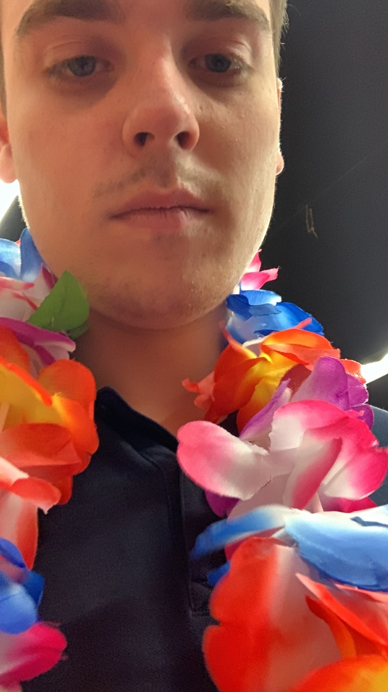
Eenmaal aangekomen op school na een hoop lachen in de Solow, was het nog niet de tijd om te versieren.
Dit besloten we op de dag van de expo te doen. Eerst moesten er nog wat dingetjes gebeuren. Er was niet
super veel tijd meer over, dus het was eigenlijk een kwestie van de puntjes op de "i" zetten. De werelden
waren dus ein-de-lijk samengevoegd (op die ene na dan), dus we konden de game eindelijk spelen! Het
enige dat nog moest gebeuren was het teleporteren. We wilden dus met een soort portals werken, wat
verbazingwekkend genoeg de portals waren waar ik eerst over begon! We volgden de tutorial om dit
voor elkaar te krijgen. We deden alles na, maar het wilde niet werken. Nouja helaas, we moesten dus
iets anders bedenken. Dit verschoven we naar de volgende dag. Een groot risico, maar we wisten dat
het goed zou komen voor de expo!
Vrijdag 17 juni 2022
Het was eindelijk tijd voor de dag waar wij de afgelopen twee weken naartoe gewerkt hebben: De dag
van de expo! Helaas was het voor ons nog niet echt feest, want er moest nog iets gebeuren! Het teleport-
eren moest nog in de game verwerkt worden. De portals wilden dus niet werken, dus we moesten iets anders
bedenken. Uiteindelijk hebben wij dit opgelost met bollen waar je tegenaan moet lopen om te teleporteren.
Terwijl twee uit mijn groepje hiermee aan de slag gingen, was het aan de rest (inclusief ik) om alles een
beetje te versieren. We hadden het gekochte tafelkleed neergelegd, alle opblaasspullen opgeblazen (met
een enorm rood hoofd tot gevolg) en de fantastische flamingoslingers opgehangen. Zie hieronder hoe dit
er uiteindelijk uit zag (Deze foto is trouwens gemaakt door Zoë Vink uit mijn groep):
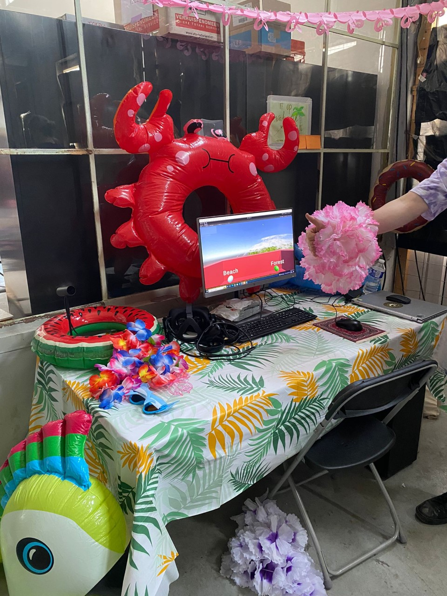
Op deze foto ziet u trouwens ook de teleporters! Zoals eerder benoemd, hebben wij ervoor gekozen om
te teleporten door middel van bollen waar je tegenaan moet lopen. De lichtblauwe bol is de teleporter
naar het eiland (wij noemden dit uiteindelijk toch beach) en de groene bol is de teleporter naar het
bos. Uiteindelijk is dit dus gelukt. Onze game is af! Hierna was het aan ons om het even uit te testen
voordat de expo zou beginnen. Het was erg leuk, want om het eindresultaat van waar je als groep twee
weken lang zo hard aan gewerkt hebt in VR te zien maakt je wel trots. Uiteindelijk is het een erg mooie
game geworden! Voor de gehele beschrijving van de game, verwijs ik u naar het kopje hieronder.
Hierna was het tijd voor een lange pauze voordat de invasie van bezoekers de verschillende producten
uit kwamen proberen. Ik besloot op een terrasje wat te drinken, maar ik weet niet of dit relevant is voor
dit portfolio. Ik skip dat stukje dus even ;).
Om 16:00 was het dan eindelijk tijd voor de expo. We besloten af te wisselen in wie er bij onze game zou
staan om aan de bezoekers te presenteren wat wij gemaakt hadden. Ik was om 18:00 pas aan de beurt,
dus ik had even de tijd om rond te lopen. Eerst besloot ik even te kijken hoe de nummer 1 op de lijst
precies presenteerde. Dit vond ik handig om te weten, voordat ik compleet stil val of iets dergelijks.
Ik merkte al gelijk dat er een hoop langs kwamen die geen Nederlands spraken. Nouja, als u dit alles
gelezen heeft (ten eerste, respect) zou u weten dat ik erg onzeker ben over mijn Engels. Ik was dus een
beetje nerveus. Ik besloot rond te lopen en kocht voor het muntje dat wij van Chris kregen gelijk een
biertje bij de bar. Dit was overigens zeker niet mijn laatste. Om 18:00 was ik dan eindelijk aan de beurt
en ik was erg zenuwachtig. In de 40 minuten die ik daar stond, kwamen er ongeveer vijftien bezoekers
voorbij en negen hiervan spraken Engels! Ik kwam erachter dat mijn Engels een stuk beter was dan
gedacht! Of dit door mijn oefening van de afgelopen weken was (Ja, echt) of door de biertjes die ik
achterover getikt had, geen idee. Maar ik verraste mezelf enorm!
Daarbij vonden de bezoekers onze game ook erg leuk, met als hoogtepunt een wat oudere man die
helemaal verliefd was op de VR. Hij was er zo mee bezig, dat hij een paar keer bijna achterover viel.
Daarbij stond hij daar ook wel eventjes, dus het was overduidelijk dat hij echt van onze game genoot.
Dit gaf mijn een zeer goed gevoel. Want je weet dat hetgeen waar jij met je groepje aan gewerkt hebt
de afgelopen weken echt aanslaat bij de bezoekers. Achteraf heb ik alleen maar genoten van deze 40
minuten en ben ik blij dat ik me door de zenuwen heen heb kunnen slaan. Het waren dan maar 40 minu-
ten, maar zeker de leukste van de labweken! Én ik leerde dat mijn Engels helemaal niet zo slecht is
als ik van tevoren dacht (al werd ik wel uitgelachen door een vriendin doordat ik een heel erg Nederlands
accent had bij het spreken ervan)!
Na nog een hoop biertjes en veel gelachen te hebben, was het tijd om op te ruimen en de labweken te
beëindigen. Aan het begin van deze weken keek ik er erg tegenop om meerdere redenen. Achteraf denk
ik dat ik me druk maakte om niks. Dit had dan onder meer te maken met mijn groepje. Ik heb erg veel
met ze gelachen en we zijn tot een mooi eindresultaat gekomen. Helaas kwam mijn visuele onderdeel niet
aan bod in de game zelf, maar ik ben blij dat ik uiteindelijk toch veel op de achtergrond heb kunnen
doen. Achteraf gezien waren het twee leuke en leerzame weken waarin ik veel nieuwe mensen heb leren
kennen. Het vroege opstaan vond ik daarentegen wel erg lastig, want ik kon er niet echt aan wennen.
In ieder geval heb ik het best naar mijn zin gehad de afgelopen weken!
Het uiteindelijke product
Ons product is een game geworden. Nouja, meer een soort virtuele wereld waar je in loopt. Onze groeps-
naam is "Op vakantie", dus wij besloten hier iets op te bedenken. We bespraken een beetje waar we
graag een keertje op vakantie zullen willen. Eigenlijk zeiden we allemaal Griekenland of Italië, maar
we besloten wat breder te kijken. We koppelden het oefenen met Unity aan de werelden die wij wilden
combineren in de game. Ikzelf wil graag een keertje naar een onbewoond eiland. Zelf alles moeten uit-
zoeken om te overleven. Dit werd dus de inspiratie van één van de werelden. Verder is hier een bos aan
gekoppeld, doordat kamperen ook iets is wat mensen graag doen.
Eerst wat uitleg over hoe de gebruiker precies interactie heeft met de game. Voor dit project hebben wij
een oculus VR-set gekregen. De gebruiker kan rondkijken door simpelweg het hoofd te bewegen. Verder
zitten er controllers bij, welke je gebruikt om spullen op te pakken, mee te gooien óf om handmatig
te kunnen draaien. Eigenlijk is het dus erg simpel, met dank aan de set die wij konden lenen :).
In ieder geval, onze game gaat dus over vakantie en heet "VR Vacation Vibe". "VR" omdat het in VR is,
"vacation" omdat het over vakantie gaat en "vibe" omdat je wel degelijk "vibet" in de game door de muziek,
maar ook om de naam leuker te laten klinken. Je begint in een rode box waar je als gebruiker de keuze hebt
tussen het bezoeken van stranden en een bos. De gebruiker kiest dus zelf zijn / haar ideale vakantieplek
om naartoe te gaan in de game!
Laten we beginnen met de groene bol, het bos. Teleporteer hier naartoe en ervaar moeder natuur tot de
max! Er is hier een hoop moois te beleven. Bewonder de vlinders (zie het onderstaande filmpje), zoek de
huisjes op en luister vooral naar de random muziek op sommige plekken. Zoek je dus een rustvakantie, dan
is dit dé plek voor jou!
Naast het bos heb je stranden. Helaas hebben wij één strand niet kunnen laten zien in de expo, maar deze
zult u wel zien in de showcase video. Bij één van deze stranden word je geteleporteerd op een plek aan de
rand. Het lijkt een normaal eiland, maar al snel merk je dat het eiland is overgenomen door piraten! Je
kijkt om je heen en ziet een schip, schatkisten en nog veel meer. De muziek die er speelt geeft een sfeer
die je laat voelen dat je echt op een pirateneiland bent. Weet jij te ontkomen aan de piraten? En durf jij
in de buurt van de schatkisten en het schip te komen? Zie hieronder een video van het bos en dit strand.
Het tweede strand kwam dus niet in de expo, maar deze is iets meer gericht op de vakantie. Het is namelijk
een bewoond eiland! Op dit eiland is van alles te zien! Maak een wandeling door de bergen, breng
een bezoekje aan het dorp dat zich in het midden bevindt en speel een potje volleybal tegen jezelf, want
helaas kan je geen multiplayer. Dit eiland is puur voor de recreatie. Geniet van het uitzicht en maak lol!
Dat is precies waar dit eiland voor gemaakt is!
Kortom: Als je wil genieten, bezoek je het bos. Wil je kiezen voor avontuur? Dan kan je naar het pira-
teneiland. Wil je puur voor de recreatie gaan? Ga dan voor het bewoonde eiland! Voor ieder wat wils dus!
Dat is wat wij proberen te bereiken met deze game. We wilden ervoor zorgen dat iedere gebruiker het ook
daadwerkelijk leuk zou vinden. Wij denken dat dit zeer goed gelukt is!
Voor een demonstratie van ons eindproduct, zie de video hieronder!
Reflectie
Voor mij waren dit leuke en leerzame weken. Ik heb mezelf niet alleen verbeterd, maar ook merk ik
dat wij als team echt iets goeds neergezet hebben. Vanaf het begin waren wij eigenlijk van plan om
een game te maken die iets met vakantie te maken had. Of dit uiteindelijk gelukt is, laten wij aan de
anderen over. Zelf denk ik dat we er iets meer hints in konden verwerken. Het is een hele goede game
geworden, maar we merkten tussendoor dat we een beetje afdwaalden van het onderwerp "vakantie". Dit
resulteerde in een game met twee eilanden en een bos, maar een minimaal aantal factoren die wezen op
vakantie. Dit was erg jammer, maar we hadden nou eenmaal geen tijd meer over om extra dingen toe te
voegen.
Zoals eerder beschreven, ben ik erg blij met het eindresultaat. De game is mooi geworden door de ver-
schillende eilanden welke er goed en professioneel uit zien. Als je mij zou vertellen dat dit uit een
professionele game komt, had ik het meteen geloofd. Buiten dat het een hele mooie game is, vonden de
bezoekers bij de expo het ook erg leuk om te spelen. Het was onze bedoeling om de gebruiker op meerdere
manieren te prikkelen. Het ziet er goed uit, er is duidelijk sprake van interactie en je kunt ook
muziek luisteren. Een hele hoop dingen die het dus een game maken die interessant en leuk is om te
spelen! Het enige ding dat ik minder vind, is de teleporteerplek aan het begin. Het is best oké
geworden, maar het is iets te simpel geworden doordat we weinig tijd over hadden. Ik vind het dan
ook best jammer dat mijn school er uiteindelijk niet in verwerkt is. Het zou het een stuk duidelijker
maken wat precies het verhaal achter ons product is.
Kijkend naar mijn proces, denk ik dat het best oké gegaan is. De eerste dagen focuste ik vooral op
het begrijpen van Unity. Hoe werkt het? En hoe kan ik het beste iets moois neerzetten? Hier heb ik
mij vooral in het begin op gericht. Hierna heb ik vooral aan de interactie met de gebruiker gezeten.
Ik werkte aan de hoofdpagina, wat een VR-versie van de school zou zijn. Ik stak er veel tijd in, maar
uiteindelijk kwam dit niet in de game wat erg jammer was. Het voelde alsof ik een paar dagen weg-
gegooid had, maar dat bleek niet zo te zijn. Doordat zoiets kleins me veel tijd en moeite kostte (zowel
op school als thuis) heb ik veel kunnen leren. Ik heb dit later kunnen toepassen, toen ik veel op
de achtergrond mee heb gewerkt om de game tot iets moois te maken. Ik denk dat ik hierin best
belangrijk geweest ben. Uiteindelijk baal ik dus dat er van mij erg weinig visueels in de game te
zien is, maar wetende dat ik toch een aandeel gehad heb in het werkende krijgen ervan maakt mij wel
weer trots. Kijkende naar het verschil tussen wat mijn groep en ik gedaan heb, denk ik dat het ongeveer
gelijk ligt. Mijn groep was dan vooral met het maken van de wereld bezig en ik was degene die vooral
met de achterliggende zaken bezig was.
Als ik naar mijn plus- en minpunten kijk gedurende weken, denk ik dat er vooral pluspunten zijn.
Ik ken mezelf van de vorige projecten en bij een tegenslag zat ik er lang mee. Omdat ik zo baalde van
een bepaald iets gaf ik het op. Ik merkte dat ik een minder aandeel had in wat ik toen maakte dan ik
van tevoren hoopte. Dit is nu anders geweest. Mijn school waar ik lang aan gezeten had, kwam niet in
de game. In plaats van bij de pakken neer te zitten keek ik verder. Wat moet ik nu gaan doen? Ik zag
mijn groep allemaal aan de werelden werken. Ik besloot een hoop tutorials te kijken van VR (Zowel op
school als thuis) om goed te begrijpen hoe het interactieve gedeelte werkte. Ik ben trots dat ik, ook
al was ik zo moe na een lange dag toch verder ging om mezelf te ontwikkelen. De volgende dag wist ik
beter hoe dingen werkten. De dagen die hierop volgden heb ik veel kunnen doen en zijn voor mij erg
leerzaam geweest. Als ik hiernaar kijk, denk ik dat ik me verbeterd heb op het vragen om hulp. Ik
ben een persoon die graag alleen werkt en graag zelf dingen zou willen oplossen. Deze week heb ik
geleerd dat hulp vragen soms de beste optie is. Met de hulp van mijn groep en sommige docenten heb
ik deze weken erg veel van Unity bijgeleerd. Het was iets minder leuk dan ik dacht, maar ik ben blij
dat ik mezelf op dit gebied heb ontwikkeld. Ik wist niet alleen het maken van games te ontwikkelen,
maar ook het coderen in C# heeft mij wel degelijk slimmer gemaakt. Het is natuurlijk maar een mini
gedeelte wat ik er nu van weet, maar alle beetjes helpen. Dan hetgeen waar ik stiekem het meest
trots op ben: Mijn Engels. Dit is niet iets dat ik deze week geleerd heb, want ik zat alleen bij
Nederlands-sprekende studenten in de groep, maar ik kwam erachter dat ik me minder zorgen moet
maken over dingen. Ik leg de lat vaak veel te hoog bij mezelf. Ik verwacht van mezelf dat ik
vloeiend Engels kan, maar dat hoeft helemaal niet om je verstaanbaar te maken. Ik wist me makkelijk
verstaanbaar te maken en ik had er lol in! Tot slot denk ik dat ik een stuk socialer geworden
ben doordat ik veel nieuwe mensen heb leren kennen.
Kijkende naar de minpunten, denk ik dat het er eigenlijk niet super veel zijn. Wel heb ik mezelf
veel moeten betrappen op iets te laat komen op school. Ik miste hierdoor vaak de informatie die
Chris gaf aan het begin van een dag. Ook merkte ik dat ik, als er even niets te doen was gelijk
weg was. Ik had op deze momenten ook gewoon wat meer hulp kunnen bieden aan degene achter
de pc die op dat moment bezig was. Dit had dan vooral te maken met dat ik simpelweg geen energie
meer had. Die hele dagen op school waren voor mij best zwaar, omdat ik vaak ook laat sliep. Dat is
iets wat ik wel zou mogen verbeteren, want later heb ik deze tijden dagelijks. Toch wat minpuntjes
dus, in de dagen dat ik ook erg veel geleerd heb en ik positief op terug kijk.
Als ik kijk naar hoe ik de dagen ingevuld heb, ben ik tevreden, maar ook licht ontevreden. Ik ben
tevreden doordat ik eigenlijk altijd wel hard bezig was. Als er even niets voor me was, zocht ik
iets anders uit. Dit besprak ik natuurlijk wel eerst met de rest. Ik werkte dus een stuk vooruit
om later aan de gang te gaan met datgene zonder grote problemen. Ik merkte dat we zo een stuk
makkelijker door het proces heen gingen. Ik ben ook een beetje ontevreden doordat ik (zoals eerder
benoemd) niet altijd aanwezig was. Ik was vaak iets te laat en de pauze die ik tussendoor nam was
in mijn ogen vrij lang. Ik was zo van de 8 uur die we daar zaten per dag ongeveer 6 uur echt aan
het werk. Als ik daar zo over nadenk is dat best veel. achteraf denk ik dus wel dat ik een goed
aandeel gehad heb in het proces.
Tot slot van deze supersaaie reflectie, hoe dacht ik er in het begin over en hoe is het uiteindelijk
gegaan? In het begin was ik gefrustreerd en nerveus. Ik was dan ook totaal niet gemotiveerd om
aan het werk te gaan. Dit had te maken met het feit dat wij zelf de groepen niet mochten maken en
het gebouw me niet erg vrolijk maakte. Het was benauwd en de hitte aan het einde werkte ook niet echt
mee. Dat eerste was snel weg, want ik werd in een groep gezet waar ik achteraf erg blij mee ben. Het
was een hele fijne en gezellige groep om mee te werken. Eigenlijk was het vanaf de eerste dag al leuk
en dit bleef de gehele twee weken zo. Ik werd wat gemotiveerder en werkte keihard aan mijn deel.
Achteraf kijk ik dus met een lach terug op de labweken. Ik had me van tevoren nergens zorgen over
hoeven maken. Ik heb veel nieuwe mensen leren kennen en mezelf ontwikkeld op meerdere vlakken wat
maakt dat ik het erg naar mijn zin gehad heb. Ik heb dus een hele hoop geleerd, niet alleen in Unity,
maar ik ben ook socialer geworden en ik ben erachter gekomen dat ik mijn Engels gewoon prima beheers.
Al met al waren het dus prima weken voor mij. Ik kijk er dus met een lach op terug, al hoef ik ze niet
nogmaals mee te maken. Ik ben namelijk een week later nog aan het bijkomen. Het was erg intensief.